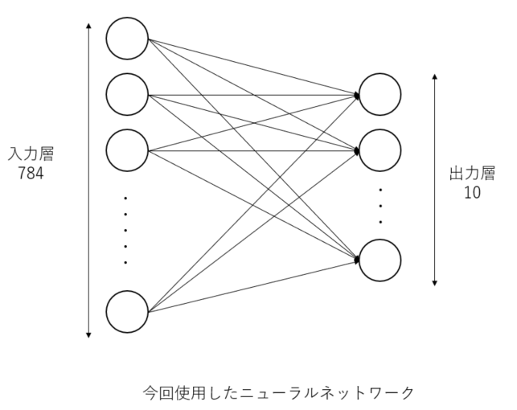

TensorFlowを利用したMNISTデータ解析ワークフロー #
本章では、WHEELを用いた計算事例として「TensorFlowを利用したMNISTデータの解析ワークフロー」を紹介します。
目次
- MNISTデータについて
- NN(Neural Network)について
- kerasについて
- ワークフローの作成
- ジョブの投入
- 解析結果の確認
1. ワークフロー概要 #
本事例では、富岳上でTensorFlow利用して、 MNISTデータを用いた手書き数字画像学習モデルの作成と 推論を行ないます。
MNISTデータとは手書き数字画像60000枚とテスト画像10000枚を集めた画像データセットのことであり、 ニューラルネットワークを学習するうえで非常に便利な画像のデータセットとして著名です。 データセットの中身は以下のような構造になっています。
MNISTデータ
├ 学習用データ (60,000個)
│ ├ 画像データ
│ └ ラベルデータ(正解データ)
│
└ 検証用データ (10,000個)
├ 画像データ
└ ラベルデータ（正解データ）
各画像データに対して正解データであるラベルデータが一つずつ与えられています。
2. NN(Neural Network)について #
ここでは、MNISTデータを解析する際に使用するNNという手法について説明します。 NNとは、ニューラルネットワークの略で、人間の脳内にある神経細胞（ニューロン）とそのつながり、つまり神経回路網を人工ニューロンという数式的なモデルで表現したものです。 入力層、出力層、隠れ層から構成されていて、層と層の間には、ニューロン同士のつながりの強さを示す「重み」があります。

画像より特徴を抽出して、ノードの重みを更新していき学習させていきます。 本事例では、MNISTのデータセットを用いたので28*28ピクセルの入力から0~9の数字のどれかという出力を出すために入力層を784ノード、出力層を10ノードとしています。
3. ワークフロー作成 #
新規プロジェクトを作成し、taskコンポーネントを2つ追加してください。 それぞれのコンポーネントの名前は train __estimate__としてください。
trainコンポーネントの設定 #
__trainコンポーネントに run.sh という名前で新規ファイルを作成し次の内容を記入してください。
#PJM --rsc-list "elapse=01:00:00"
#PJM -L "node=1"
#PJM -x PJM_LLIO_GFSCACHE=/vol0004
export PATH=/home/apps/oss/TensorFlow-2.2.0/bin:$PATH
export LD_LIBRARY_PATH=/home/apps/oss/TensorFlow-2.2.0/lib:$LD_LIBRARY_PATH
cat <<EOF >kerasMnist.py
from tensorflow import keras
from tensorflow.keras.datasets import mnist
from tensorflow.keras.models import Sequential
from tensorflow.keras.layers import Dense, Dropout, InputLayer
from tensorflow.keras.optimizers import RMSprop
print('download data')
# load mnist data
(x_train, y_train), (x_test, y_test) = mnist.load_data()
print('download done')
# set input data
x_train = x_train.reshape(60000, 784)
x_test = x_test.reshape(10000, 784)
x_train = x_train.astype('float32')
x_test = x_test.astype('float32')
x_train /= 255
x_test /= 255
y_train = keras.utils.to_categorical(y_train, 10)
y_test = keras.utils.to_categorical(y_test, 10)
# create model
model = Sequential()
model.add(InputLayer(input_shape=(784,)))
model.add(Dense(10, activation='softmax'))
model.compile(loss='categorical_crossentropy', optimizer='rmsprop', metrics=['accuracy'])
# train model
print('start learning')
epochs = 20
batch_size = 128
history = model.fit(x_train, y_train, batch_size=batch_size, epochs=epochs, verbose=1, validation_data=(x_test, y_test))
# save weights
print('save weights')
model.save_weights('param.hdf5')
EOF
python kerasMnist.py > learn.log
コンポーネントのプロパティ画面を開いて、以下の5項目を設定してください
- script: run.sh
- host: fugaku
- useJobScheduler: 有効
- outputFile: param.hdf5
- include learn.log
estimateコンポーネントの設定 #
__estimateコンポーネントに run.sh という名前で新規ファイルを作成し次の内容を記入してください。
#PJM --rsc-list "elapse=01:00:00"
#PJM -L "node=1"
#PJM -x PJM_LLIO_GFSCACHE=/vol0004
export PATH=/home/apps/oss/TensorFlow-2.2.0/bin:$PATH
export LD_LIBRARY_PATH=/home/apps/oss/TensorFlow-2.2.0/lib:$LD_LIBRARY_PATH
cat <<EOF >kerasMnist.py
from tensorflow import keras
from tensorflow.keras.datasets import mnist
from tensorflow.keras.models import Sequential
from tensorflow.keras.layers import Dense, Dropout, InputLayer
from tensorflow.keras.optimizers import RMSprop
print('download data')
# load mnist data
(x_train, y_train), (x_test, y_test) = mnist.load_data()
print('download done')
# set input data
x_test = x_test.reshape(10000, 784)
x_test = x_test.astype('float32')
x_test /= 255
y_test = keras.utils.to_categorical(y_test, 10)
# create model
model = Sequential()
model.add(InputLayer(input_shape=(784,)))
model.add(Dense(10, activation='softmax'))
model.compile(loss='categorical_crossentropy', optimizer='rmsprop', metrics=['accuracy'])
# load weights
print('loadweights')
model.load_weights('param.hdf5')
# eval model
print('eval')
score = model.evaluate(x_test, y_test, verbose=1)
print()
print('Test loss:', score[0])
print('Test accuracy:', score[1])
EOF
python kerasMnist.py > eval.log
コンポーネントのプロパティ画面を開いて、以下の4項目を設定してください
- script: run.sh
- host: fugaku
- useJobScheduler: 有効
- include: eval.log
5. 実行結果の確認 #
解析結果の確認を行います。 実行完了後、リモートタスクに作成された「log.kerasMNIST」,「log.kerasMNISTEval」ファイルより以下の結果を確認することができます。
・
・
・
('Test loss:', 0.27075190788507464)
('Test accuracy:', 0.927)
用語の意味は以下の通りとなっています。
| プロパティ名 | 設定値 |
|---|---|
| Test loss | 学習用データを与えた時の損失値。小さくなればなるほど正しい結果を表せています |
| Test accuracy | 検証用データの正答率。1に近いほど検証用データにおいて精度が高いことを表しています |
accuracyが「0.927」すなわち検証用データにおいて精度92.7%の学習モデルが作成されたことが確認できます。 TensorFlowを利用したMNISTデータ解析ワークフロー例は以上になります。